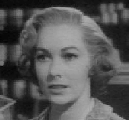

|
|
Grace
Kelly
Grace Kelly est née
à Philadelphie le 12 novembre 1929.
Elle fut une des actrices fétiches
d'Alfred Hitchcock.
Elle a joué dans
plusieurs de ses films les plus célèbres dont
Fenêtre sur cour,
Le crime était presque parfait, et surtout
La main au collet.
Outre les films d'Hitchcock, elle tournera dans le célèbre
Le train sifflera trois fois de Fred Zinneman au coté de
Gary Cooper.
Elle mourra le 14 septembre 1982 dans un accident de voiture tout près
de l'endroit ou elle
avait tourné la célèbre scène de la promenade en voiture de
La main au collet...
|
|
Kim
Novak
Marilyn Pauline Novak est née le 13 février 1933 à Chicago (Illinois). Outre
l'inoubliable Vertigo (1958), elle tournera également
L'homme au bras d'or avec Franck Sinatra en 1956. Ce film fut l'un
des premiers films américain à traiter du problème de la drogue.
Kim Novak se fera également remarquer en 1957 par une grève de protestation
concernant le montant de son salaire...
|
|
Joan
Fontaine
Joan Fontaine de son vrai nom Joan de Beauvoir de Havilland est née à
Tokyo le 22 octobre 1917. Elle restera célèbre pour son interprètation dans
le premier film américain d'Alfred Hitchcock Rebecca
et surtout pour Soupçons pour lequel elle obtiendra
l'oscar de la meilleure actrice en 1942.
|
|
Janet
Leigh
De son vrai nom Janet Helen, Janet Leigh est née le 6 juillet 1926
à Merced (Californie). Mise a part sa participation exceptionnelle dans
Psychose, elle a joué dans les
Vikings (1958) (avec Kirk Douglas) ou bien Scaramouche (1952).
Cependant, elle est surtout connue comme l'épouse de Tony Curtis et la
maman de la charmante Jaimie-Lee Curtis à laquelle elle fit génétiquement
don de ses rondeurs fort agréables.
|
 |
Vera
Miles
De son vrai nom Vera Ralston, Vera Miles est née le 23 août 1930 à
Boise City. Elle a également joué dans The wrong man
(le faux coupable) 1957 et dans le célèbrissime
L'homme qui tua Liberty Valance (1962). Elle a également joué dans la
suite de Psychose intitulée Psychose II.
|
|
Patricia Hitchcock
Patricia Hitchcock est la fille d'Alfred et Alma
Hitchcock
Elle a joué dans trois films de son père et en
particulier dans
les célèbres L'inconnu du nord-express
et dans Psychose.
|
|
Tippi
Hedren
"Tippi"Hedren est née en 1935. Hitchcock la remarqua dans un publicité à la
télévision alors qu'elle était mannequin. Elle fut célèbre pour son rôle
particulièrement éprouvant dans
Birds (Les oiseaux) en 1963 puis pour
Marnie (Pas de printemps pour Marnie) en
1964. Pour la petite histoire, elle est la maman de la charmante
Melanie Griffith qui tourna entre-autres dans le plagiat
"hitchcockien" Body double de
Brian DePalma.
|
|
Ingrid Bergman
Ingrid Bergman est née le 29 août 1915 à Stockholm (Suède). Elle fut une des
plus grandes actrices internationale de l'après-guerre tournant entre-autres
Casablanca, Pour qui sonne le glas ? et Hantise
pour lequel elle obtiendra l'oscar de la meilleure actrice en 1945.
Pour Hitchcock, elle tournera Spellbound (La
maison du Dr Edwardes) en 1945 et
Les enchainés en 1946.
Elle mourra à Londres le 29 août 1982. |